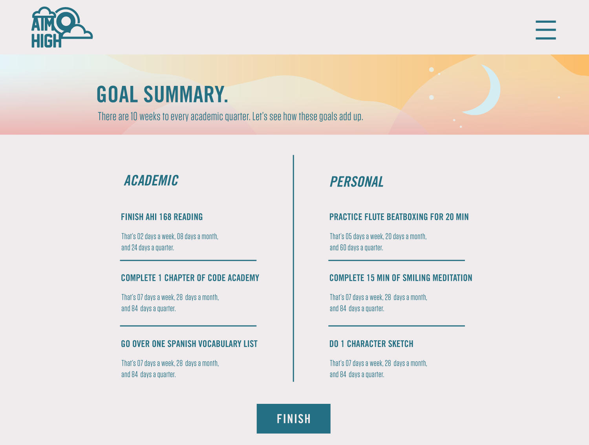
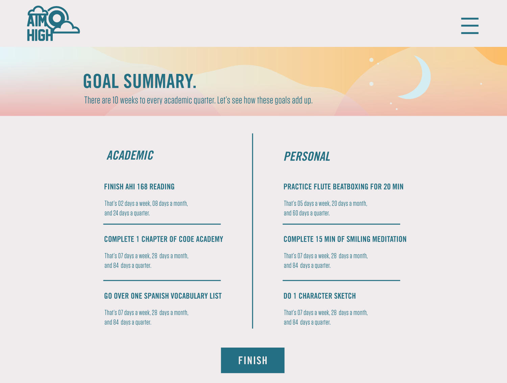
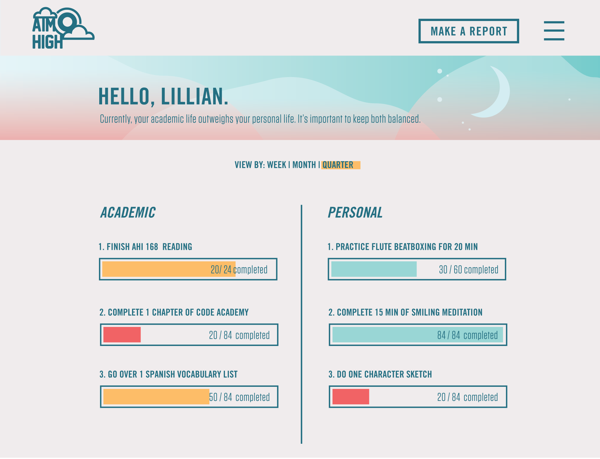
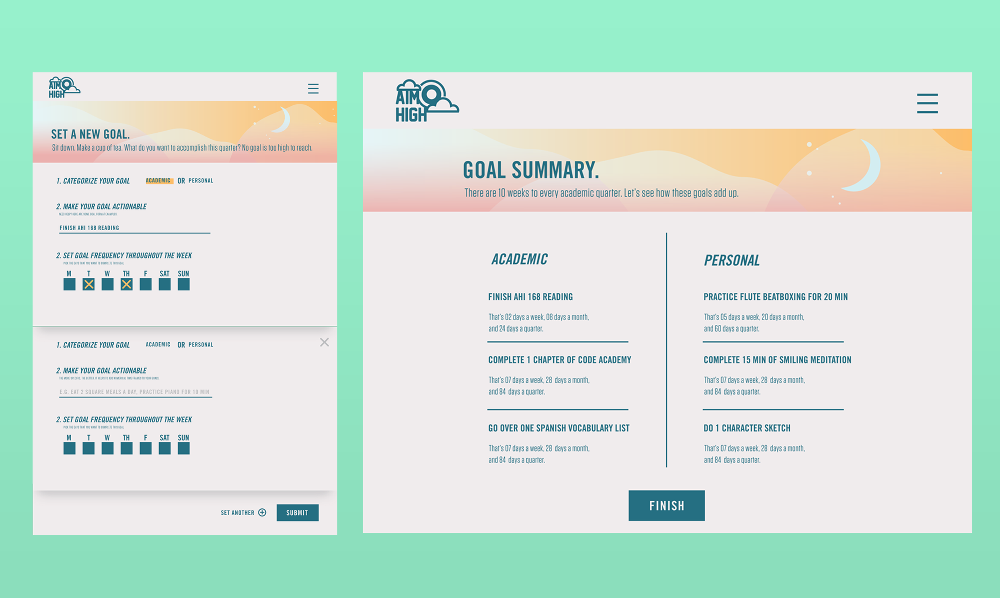

The story behind AimHigh is a personal one. At the beginning of every academic year, I've holed myself up in a coffee shop to try and visualize what an ideal year would look like. What were my priorities going to be? What did I want to accomplish? The idea was to pinpoint in writing exactly what I wanted as thoroughly as possible. The annual Evernote document covered anything from time management, to health, to friendships and relationships.
While I did understand my goals, they were largely based on feelings and were not quantifiable.
I've been my own test subject for three years and It's helped me grow. I set out to make this an easier process not only for myself, but also as a way to share it with others.